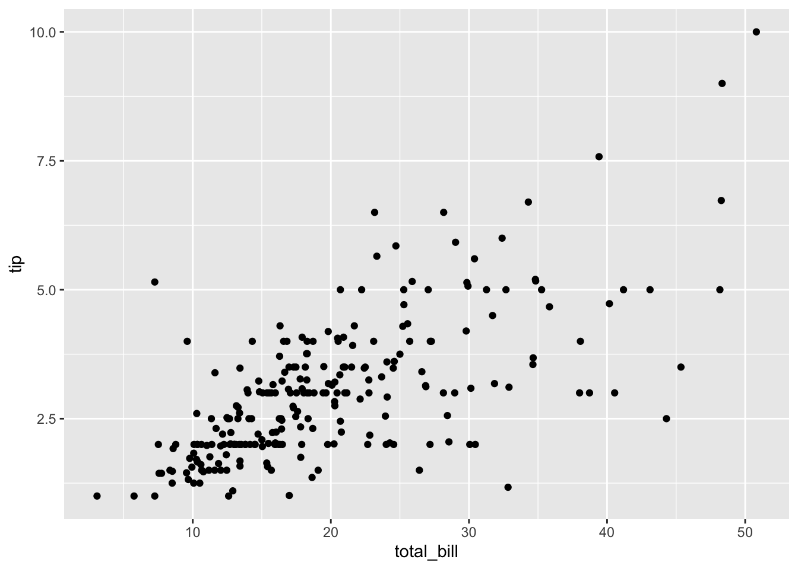
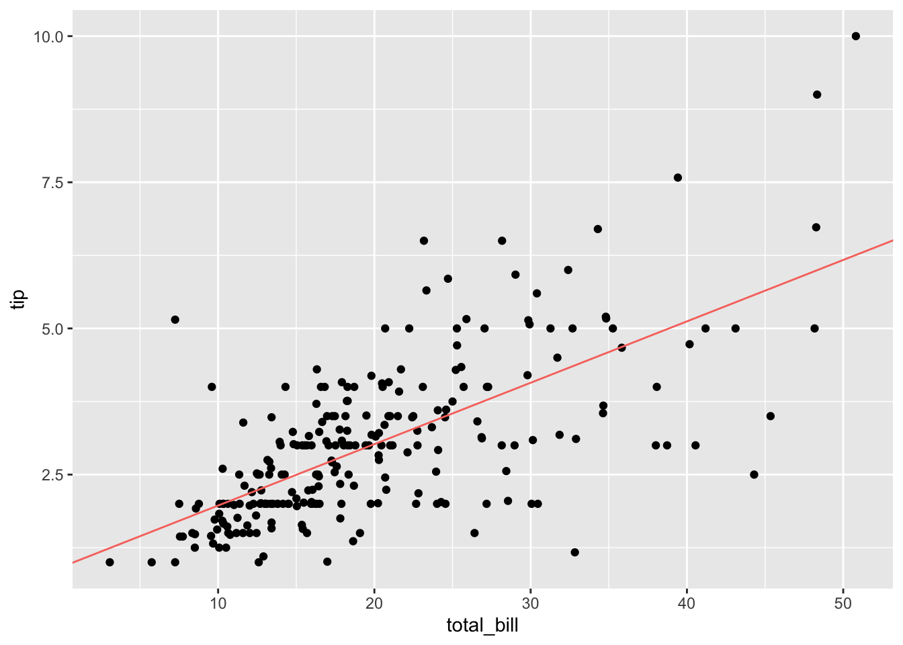
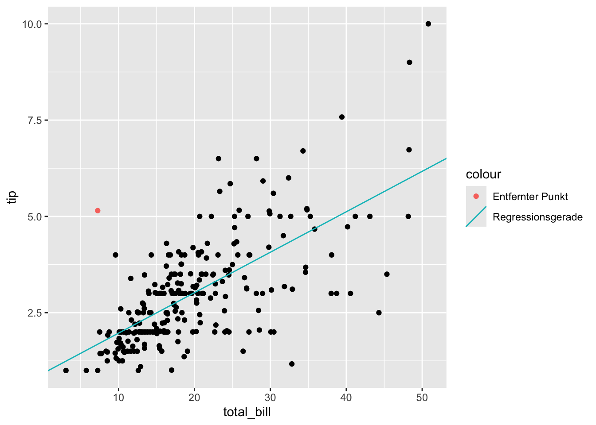
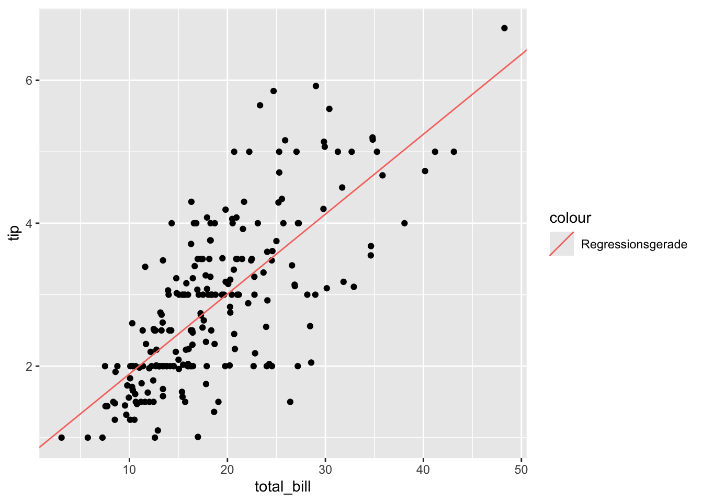
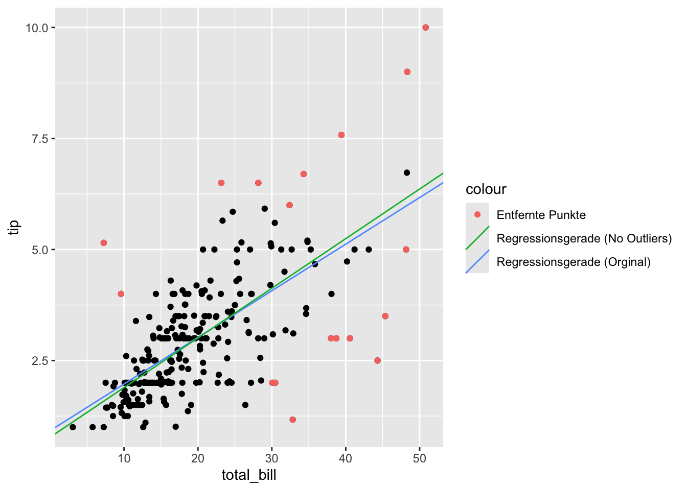

library(mosaic)Frage: Was macht einen Wert zum Ausreißer?
Eine mögliche Antwort wäre: Er liegt weit weg von den anderen Werten und hat einen (starken) Einfluss auf unser Modell.
Eine Möglichkeit solche Ausreißer zu finden ist der Cook Abstand (eng.: Cook’s distance). Die Idee dabei ist es zu messen welchen Einfluss ein Wert auf das Modell hat. Dazu schauen wir uns das Modell einmal mit und einmal ohne diesen Wert an und vergleicht diese Ergebnisse.
Schauen wir uns den Cook Abstand einmal für ein (einfaches) lineares Regressionmodell konkret an:
Vorbereitungen
Wir wollen mit mosaic arbeiten, also laden wir das Paket als erstes:
Falls die tipping-Daten noch nicht im Verzeichnis liegen, laden wir diese aus dem Internet nach:
if (!file.exists("tips.csv")) {
download.file("https://goo.gl/whKjnl", destfile = "tips.csv")
}Nun laden wir die tipping-Daten in den Datenrahmen tips:
tips <- read.csv2("tips.csv")Wir brauchen für unser Modell nur den Rechnungsbetrag total_bill und den Trinkgeldbetrag tip für unser Modell:
tips %>% select(c("total_bill", "tip")) -> tipsUnser Modell:
Werfen wir zunächst einen Blick auf das Streudiagramm unserer Daten:
gf_point(tip ~ total_bill, data = tips)
Und erstellen dann ein lineares Modell:
erg_lm <- lm(tip ~ total_bill, data = tips)
summary(erg_lm)
Call:
lm(formula = tip ~ total_bill, data = tips)
Residuals:
Min 1Q Median 3Q Max
-3.1982 -0.5652 -0.0974 0.4863 3.7434
Coefficients:
Estimate Std. Error t value Pr(>|t|)
(Intercept) 0.920270 0.159735 5.761 2.53e-08 ***
total_bill 0.105025 0.007365 14.260 < 2e-16 ***
---
Signif. codes: 0 '***' 0.001 '**' 0.01 '*' 0.05 '.' 0.1 ' ' 1
Residual standard error: 1.022 on 242 degrees of freedom
Multiple R-squared: 0.4566, Adjusted R-squared: 0.4544
F-statistic: 203.4 on 1 and 242 DF, p-value: < 2.2e-16Betrachten wir nun die Regressionsgerade in unseren Daten:
gf_point(tip ~ total_bill, data = tips) %>%
gf_coefline(
model = erg_lm,
color = ~ "Regressionsgerade",
show.legend = FALSE
) 
Für lineare Regressionsmodell können einflussreiche Ausreißer sehr hinderlich sein. Was ändert sich, wenn wir einen Wert, z.B. einen potentiellen Ausreißer, nicht betrachten?
Als Beispiel wählen wir die folgende Beobachtung aus:
tips %>% slice(173) -> tips_removed
tips_removed total_bill tip
1 7.25 5.15tips %>% slice(-173) -> tips_red
erg_lm_red <- lm(tip ~ total_bill, data = tips_red)
summary(erg_lm_red)
Call:
lm(formula = tip ~ total_bill, data = tips_red)
Residuals:
Min 1Q Median 3Q Max
-3.2136 -0.5351 -0.0818 0.4951 3.6869
Coefficients:
Estimate Std. Error t value Pr(>|t|)
(Intercept) 0.86065 0.15709 5.479 1.08e-07 ***
total_bill 0.10731 0.00723 14.843 < 2e-16 ***
---
Signif. codes: 0 '***' 0.001 '**' 0.01 '*' 0.05 '.' 0.1 ' ' 1
Residual standard error: 0.9992 on 241 degrees of freedom
Multiple R-squared: 0.4776, Adjusted R-squared: 0.4754
F-statistic: 220.3 on 1 and 241 DF, p-value: < 2.2e-16gf_point(tip ~ total_bill, data = tips_red) %>%
gf_coefline(
model = erg_lm,
color = ~ "Regressionsgerade"
) %>%
gf_point(
tip ~ total_bill,
colour = ~ "Entfernter Punkt",
data = tips_removed)
Um zu messen was diese Änderung bewirkt hat, schaut sich der Cook Abstand zunächst die Summe der quadrierten Differenzen der vorhergesagten Werte in beiden Modellen an:
new_data <- tibble(total_bill = tips$total_bill)
prognose_lm <- predict(erg_lm, newdata = new_data)
prognose_lm_red <- predict(erg_lm_red, newdata = new_data)\[d_j = \sum_{i=1}^n \left(\hat{y}_i - \hat{y}_{i(j)}\right)^2\] Dabei ist \(\hat{y}_i\) die Prognose des Wertes \(y_i\) auf Basis von \(x_i\) mit dem Originalmodell und \(\hat{y}_{i(j)}\) die Prognose wenn man die \(j\)-te Beobachtung aus dem Modell gestrichen hat.
d_j <- sum((prognose_lm - prognose_lm_red)^2)
d_j[1] 0.1511406Der Cook Abstand \(D_j\) wird nun noch normiert durch \[{\text{var}_{\text{cook}}} = p \cdot s_{\epsilon_i^2}^2\] Dabei ist \(s_{\epsilon_i^2}^2\) der erwartungstreue Schätzer der Varianz der Residuen und \(p\) die Anzahl aller erklärenden Variablen plus Eins, also: $ 1 + 1 = 2$.
Es ist also:
\[D_j = \frac{d_j}{\text{var}_{\text{cook}}} = \frac{\sum\limits_{i=1}^n \left(\hat{y}_i - \hat{y}_{i(j)}\right)^2}{p \cdot s_{\epsilon_i^2}^2}\]
# Summary des Modells
selm <- summary(erg_lm)
# Wir finden p als rank im Modell
p <- erg_lm$rank
# Wir finden den erwatungtreuen Schätzer im Summary des Modells
s_quad_eps_quad <- (selm$sigma)^2
var_cook = p * s_quad_eps_quad
D_j = d_j / var_cook
D_j[1] 0.07234504Wir können den Wert aber auch viel einfacher direkt berechnen lassen und dass für alle \(j\) mit Hilfe von cooks.distance(..):
cooks.distance(erg_lm)[173] 173
0.07234504 Wann aber ist nun ein Wert ein einflussreicher Ausreißer?
Cook selber gibt dafür die Bedingung \(D_j > 1\) an. Andere Autor*innen schreiben \(D_j > 4/n\), wobei \(n\) die Anzahl der Beobachtung ist.
In unserem Beispiel liefert die Variante \(D_j > 1\)
cooks <- cooks.distance(erg_lm)
names(cooks) <- NULL
n <- nrow(tips)
any(cooks > 1)[1] FALSEkeinen Ausreißer.
Wenn wir jedoch mit \(D_j > 4/n\) suchen .
any(cooks > 4/n)[1] TRUEdann gibt es Ausreißer.
Die Indices dieser finden wir mit:
which(cooks > 4/n) [1] 24 48 57 103 142 157 171 173 179 183 184 185 188 208 211 213 215 238Bereinigen wir nun unsere Daten um genau diese Werte:
remove <- which(cooks > 4/n)
tips %>% slice(-remove) -> tips_no_outliers
tips %>% slice(remove) -> tips_removed
erg_lm_no_outliers <- lm(tip ~ total_bill, data = tips_no_outliers)Und schauen uns das Ergebnis an:
summary(erg_lm_no_outliers)
Call:
lm(formula = tip ~ total_bill, data = tips_no_outliers)
Residuals:
Min 1Q Median 3Q Max
-2.22592 -0.48166 -0.06794 0.46992 2.31414
Coefficients:
Estimate Std. Error t value Pr(>|t|)
(Intercept) 0.773324 0.139435 5.546 8.2e-08 ***
total_bill 0.111799 0.006958 16.069 < 2e-16 ***
---
Signif. codes: 0 '***' 0.001 '**' 0.01 '*' 0.05 '.' 0.1 ' ' 1
Residual standard error: 0.7778 on 224 degrees of freedom
Multiple R-squared: 0.5355, Adjusted R-squared: 0.5334
F-statistic: 258.2 on 1 and 224 DF, p-value: < 2.2e-16gf_point(tip ~ total_bill, data = erg_lm_no_outliers) %>%
gf_coefline(
model = erg_lm_no_outliers,
color = ~"Regressionsgerade"
)
Im direkten Vergleich:
gf_point(tip ~ total_bill, data = erg_lm) %>%
gf_coefline(
model = erg_lm,
color = ~ "Regressionsgerade (Orginal)"
) %>%
gf_coefline(
model = erg_lm_no_outliers,
color = ~ "Regressionsgerade (No Outliers)"
) %>%
gf_point(
tip ~ total_bill,
color = ~ "Entfernte Punkte",
data = tips_removed
)
Unsere beiden Modelle als Formeln
Das ursprüngliche Modell: \[\widehat{tips}_{lm} = 0.9202696 + 0.1050245 \cdot total\_bill\]
Das um pot. Ausreißer bereinigte Modell: \[\widehat{tips}_{lm\_no} 0.7733236 + 0.1117985 \cdot total\_bill\]